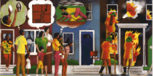

American Red Cross
 National Fire
Prevention Association
National Fire
Prevention Association
Are you ready for a Fire? National Fire
Prevention Association
Make your home fire safe:
Smoke detectors save lives. Install a battery-powered smoke detector outside each sleeping area and on each additional level of your home.
Fire is one of the most common disasters. Fire causes more deaths than any other type of disaster. But fire doesn't have to be deadly if you have early warning from a smoke detector and everyone in your family knows how to escape calmly.
Please be serious about the responsibility for planning for and practicing what to do in case of a fire. Be prepared by having various household members do each of the items on the checklist below. Then get together to discuss and finalize your personalized Fire Plan.
Install smoke detectors outside each sleeping area and on each additional level of your residence. Keep new batteries on hand.
New smoke detectors installed; batteries purchased:________(date)
Test smoke detectors once a month. Start a chart and sign it after each round of tests.
__________________(family member name) checks smoke detectors.
Look at the fire extinguisher you have to ensure it is properly charged. Use the gauge
or test button to check proper pressure. If the unit is low on pressure, damaged, or
corroded replace it or have it professionally serviced. Get training from the fire
department in how to use the fire extinguisher.
________________(family member name) examines extinguisher.
______________________________________________________
(family member names) have been trained to use the extinguisher.
Draw a floor plan of your home; mark two fire escape routes for each room.
Floor plan completed:_____________ (date)
Pick a safe outside place to meet after escaping from a fire.
Meeting place:_____________________________________
Practice a low-crawl escape from your bedroom. Try it with your eyes closed to see how
well you could do in thick smoke.
Smoke escape drill conducted:__________________(date)
Conduct a home fire drill at least twice a year.
Home fire drill conducted:_____________________(date)
And remember...when a fire, earthquake, flood, hurricane, or other emergency happens in your community, you can count on your local American Red Cross chapter to be there to help you and your family. That’s been the role of the Red Cross for more than 100 years.
The National Fire Protection Association (NFPA) has led the way to fire safety since 1896. The mission of the NFPA is protecting people, their property, and the environment from the effects of fire and related hazards.
ARC4456
Revised September 1993